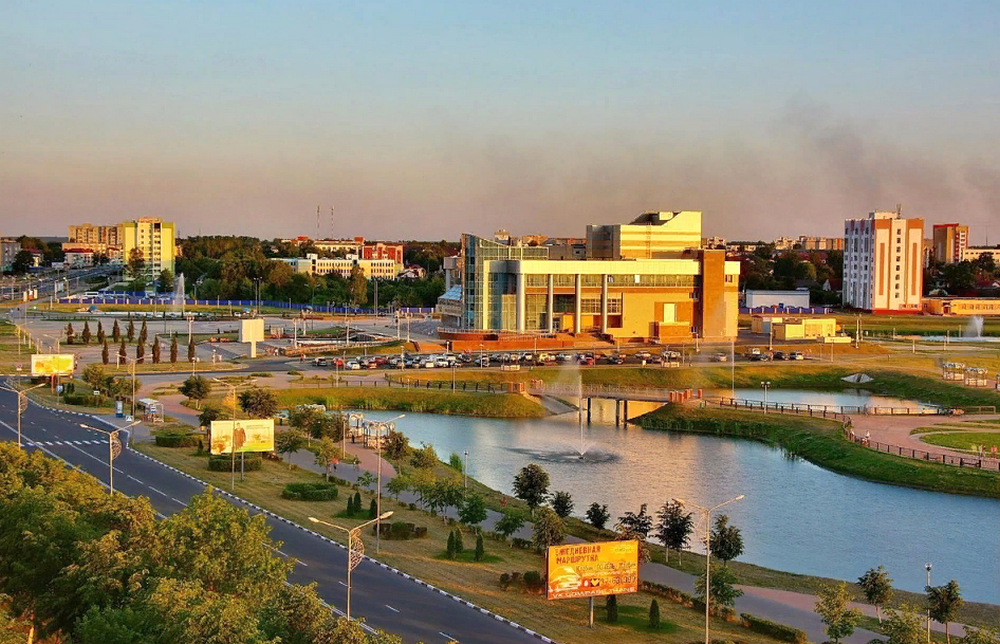

Есть города-гиганты, что поражают масштабом, и есть города-витрины, что блистают красотой. А есть Жлобин — город-труженик, город-свидетель. Его история не высечена в камне дворцов, а вплетена в стальные нити железной дороги, в журчание Днепра, в ритмичный гул металлургических заводов.
Это место, где время не бежит, а течёт — плавно и мудро. Оно оставляет свои следы не только в датах и архивах, но и в улыбках старожилов, в запахе свежего хлеба из местной пекарни, в отблеске заката на воде.
«Времен связующая нить» — это больше, чем сайт. Это живой мемориал, созданный вашими историями. Здесь переплетаются воедино вчера и сегодня: старые фотографии с вокзала оживают в рассказах путешественников, а легенды былых эпох находят отклик в делах современников.
Мы собираем по крупицам всё, что составляет душу этого города. Пройдитесь по его улочкам вместе с нами, вслушайтесь в его голоса, вглядитесь в знакомые и забытые черты. Откройте для себя Жлобин заново — город, где прошлое протягивает руку настоящему, а мы с вами держим эту связующую нить.